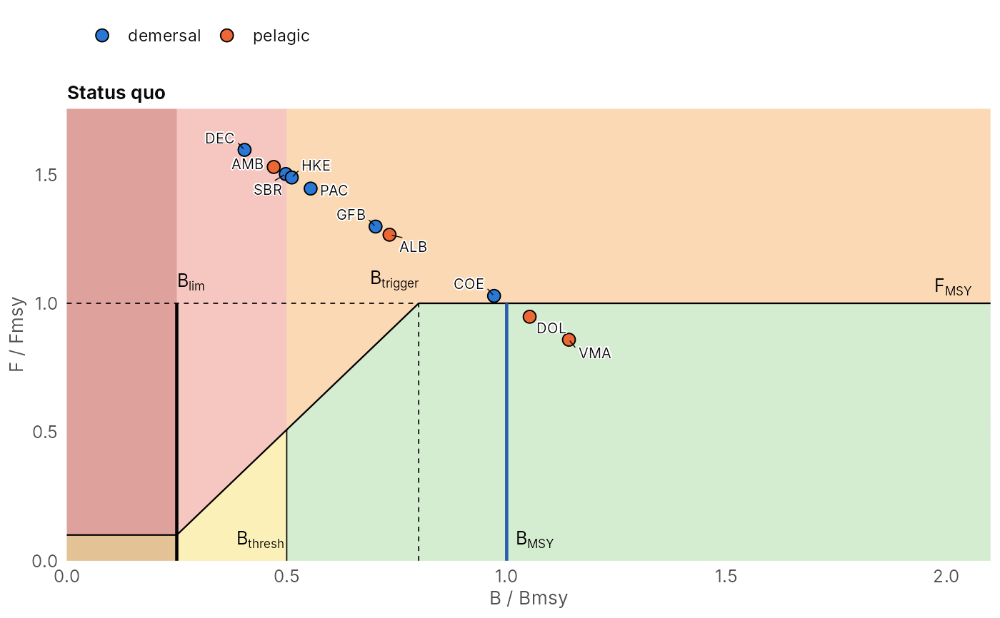

One point per stock, one panel per scenario. With zones = "hcr" the
background follows the WKREF/GFCM convention of FLRef::plotWKREF(),
with zones cut by the harvest control rule: below Bthresh, red above the
HCR line and yellow below it; above Bthresh, orange above and green
below; a dark overlay below Blim. The HCR line is Fmin up to Bclose,
a linear ramp to Ftgt at Btrigger, and Ftgt above (as
FLRef::plotGFCM(fmin = 0.1, bclose = 0.25, btrigger = 0.8)).
Arguments
- states
named list of states with
BBmsyandFFmsy(e.g. fromms_status_quo()orms_optimise()).- sys
an
ms_system.- Bpa, Blim
reference points relative to Bmsy (
Bpais Bthresh).- Btrigger, Ftgt, Bclose, Fmin
HCR trigger, target F (relative to Fmsy), biomass at and below which F is at its minimum (default
Blim, as inhcr_effort()) and that minimum F (default 0.1, the minimum effortEminofhcr_effort()).- zones
"hcr"(coloured zones and the HCR line) or"simple".- palette
zone colours:
"pastel"(default) or"flref"(the saturated colours ofFLRef::plotWKREF()).- alpha
opacity of the zones.
Examples
sys <- atlantic_system()
# \donttest{
sq <- ms_status_quo(sys, capacity = 1000, gamma = 1.5, years = 200)
plot_kobe(list("Status quo" = sq), sys)

# }